艾可
ACRO
BRANDS
依台式、日式與歐規分類整理常見品牌；點選已有商品的品牌卡，可依系列查看目前網站中的全部商品。
COMMON BRANDS
品牌依台式、日式與歐規分區，各區再按英文品牌名稱 A–Z 排列；有商品頁的品牌可直接點選進入品牌商品索引。
台灣工業控制、配線材料與電機元件常見品牌。
ACRO
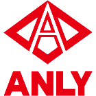
ANLY

ANV
AUSPICIOUS
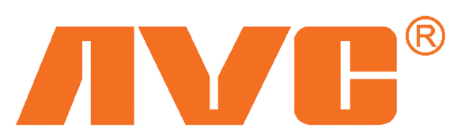
AVC
CALY
CHAO TAI
DECA

DELTA
查看 4 個商品 →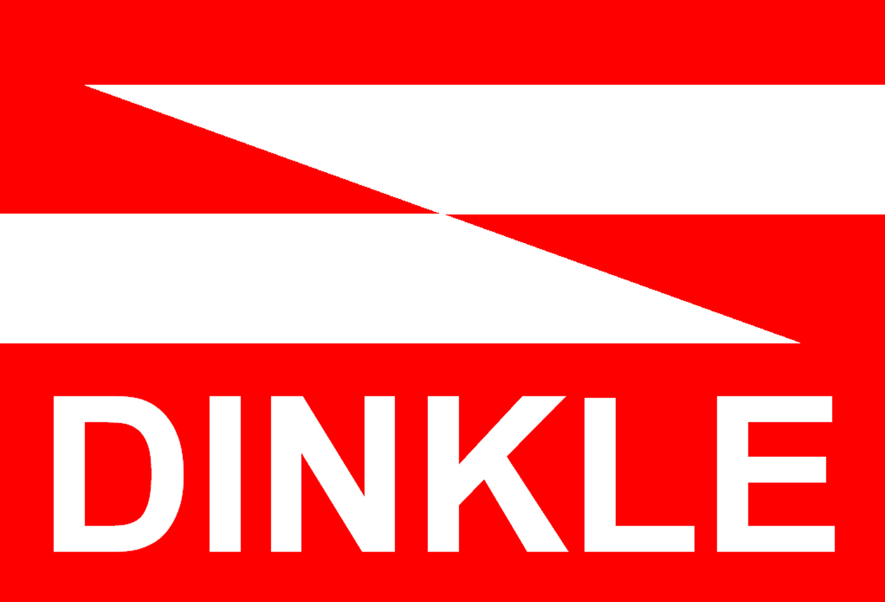
DINKLE
e-tan
FONRAY

FOTEK
查看 25 個商品 →已有商品頁GULF
查看 13 個商品 →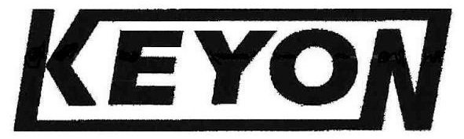
KEYON

KSS
查看 14 個商品 →已有商品頁
MEAN WELL
查看 14 個商品 →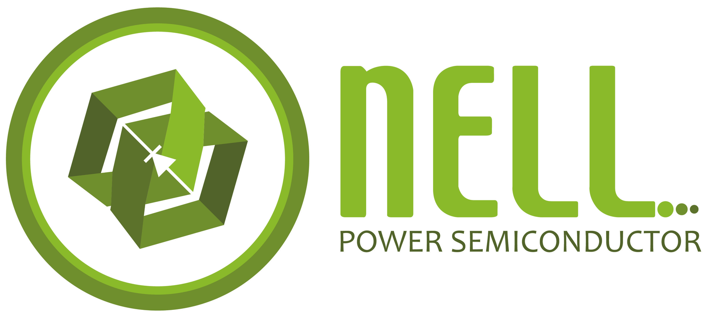
NELL

QDQ
查看 16 個商品 →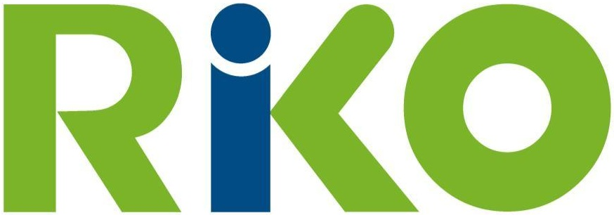
RIKO
SHIH SHIN

SHIHLIN ELECTRIC
查看 57 個商品 →TAIE
TECO
查看 3 個商品 →TEND
日本自動控制、開關、量測與電機設備常見品牌。
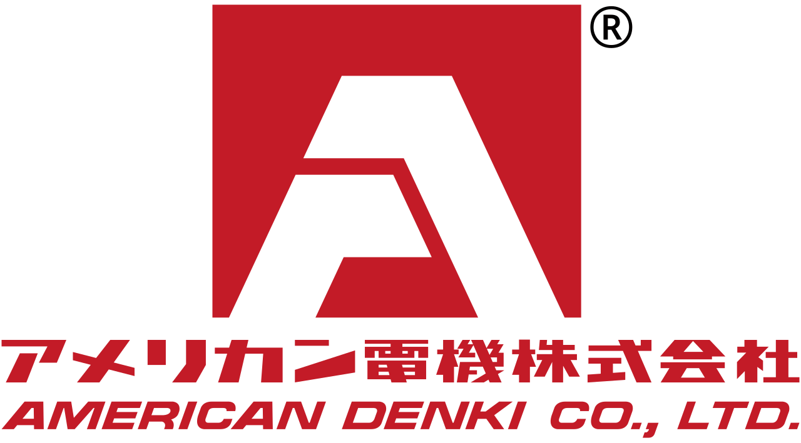
AMERICAN DENKI
DAITO
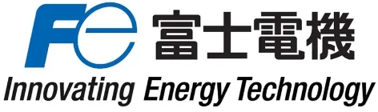
FUJI ELECTRIC
查看 3 個商品 →已有商品頁
IDEC
查看 6 個商品 →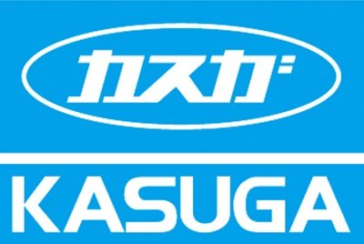
KASUGA
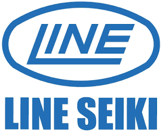
LINE SEIKI
查看 5 個商品 →
MITSUBISHI ELECTRIC
NITTO

NKK SWITCHES
查看 10 個商品 →已有商品頁
OMRON
查看 27 個商品 →PANASONIC
歐洲及歐規工業自動化、感測、配電與控制常見品牌。
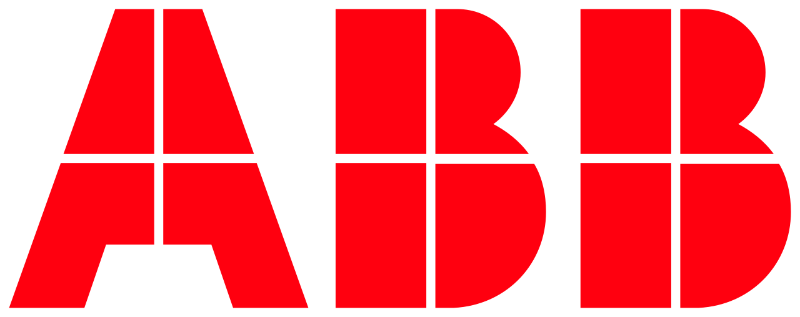
ABB
BALLUFF
EATON
FINDER
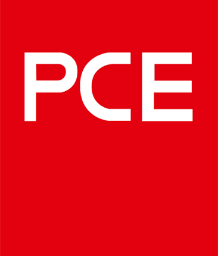
PCE

SCHNEIDER ELECTRIC
SICK
SIEMENS